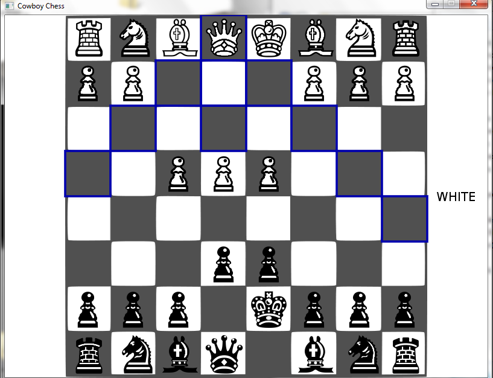
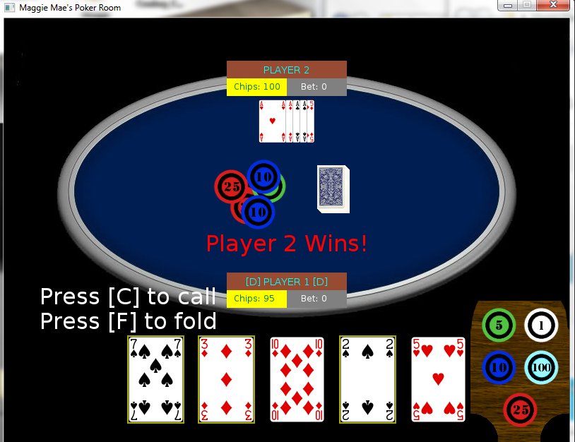

Road to Programming Salvation
Programming is something I've always wanted to pursue since I was a kid. Although I thought it was a cool career, it was one strongly frowned upon by my family. It fell into a 'nerd' category and my dad was always the macho macho type who discouraged that sort of stuff. I ended up doing other things in life for a while until I became an adult. Then I tried it out for the first time 4 years ago (back in 2012) where I fell in love with it.
I'm self taught and have NEVER taken a single CS course in my life. I choose a scripting language called Lua (derived from C) to start with due to it's beginner friendly syntax and use in gaming/modding. In conjunction with the language I was using a framework called Love2D to make different little games so I could test my coding chops. I progressed from game to game, and even made a few libraries and tools for others to use on the forum that were quite popular!
Programs I made for my grandparents
 Learning how to code was brutal and very frustrating when I first started. I kept running into simple pitfalls on getting very basic things to work. I had no instructor or professor to ask for assistance, but there was a great community on the Love2D forums that didn't mind helping new people. I spent a lot of time on the IRC chat figuring out things and asking questions, and once I had a solid foundation I began my journey to becoming a novice programmer. Eventually I reached a point where if I needed to know if something was going to work, I'd just ask the interpreter and find my answer. Eventually I reached plateau where an interpreter couldn't answer my questions. How do I structure my code folder(s)? How should I name my functions, arguments, variables? What about commenting code, were there any strict guidelines? And once again, I searched for answers but this time I started to go into unfamiliar territory... other peoples code!
I examined how other 'Lovers' (pun referencing love2d community members) coded their project and learned a great deal. Many had standardized practices in how they structured their code, classes, and methods. At first I was baffled as to why they didn't comment their code to explain ever insignificant detail. Much like how a grandmaster chess game is analyzed by spectators, there is no need to explain basic concepts like castling, en pesant, and pawn promotions. The same would apply to much of the code I looked at, it was suited towards either the programmer themselves or at a intermediate level of coding where basic things were assumed to be understood.
Not only did I venture into others code, but I also found myself at times digging up articles on programming for becoming more proficient. Quora, stackexchange, and other influential programmers who blogged (shout out to Joel Spolsky), all gave me a wealth of information on improving. Over time my code evolved and became more refined. This was reflected in my projects as I went from:
- Spaghetti code to seperated modules
- Packing multiple *unreleated* functions together to grouping them in different classes
- Hardcoding variables to using a function or class initialization to setup variables that can be changed on the fly
- Giving functions and variables irrelevant names to defining accurate purposes and identities
Overall I've achieved somewhat of a moderate proficiency of code knowledge and ability, but there is still a lot left for me to learn. I've kept an eye on LaunchCode for a while now. (1? 2 years?) When I saw that they were offering a learning experience starting this summer it looked to good to be true. But lo, and behold - They are REALLY doing it!!! Programming classes to those who wish to learn is FREAKING AWESOME! I'm proud to have been selected as a candidate for this opportunity, and hope that my programming skills are up to par with what is needed.